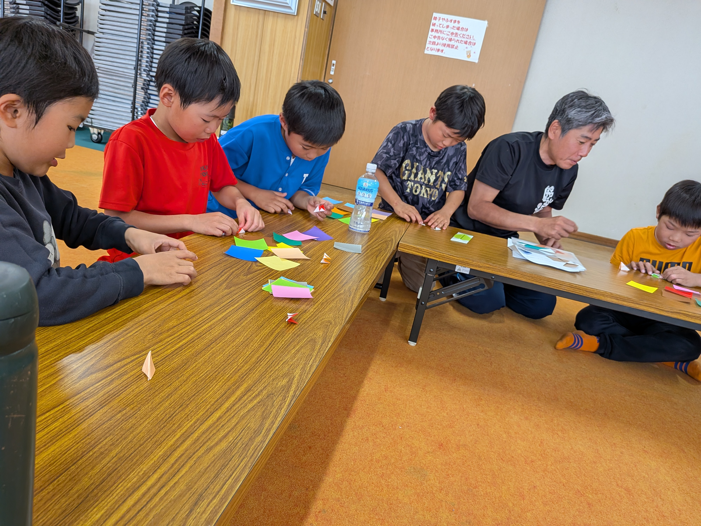

練習風景
バッティング練習で全員ホームラン達成！

5月25日（日）の練習は、来月に控えた春季大会に向けた打撃強化デーでした。 晴天の中、三鷹市グラウンドで全学年合同のフリーバッティング練習を実施。 この日は特別な「全員ホームランチャレンジ」を設けました！
全員が柵越え！白熱のチャレンジ
「今日は全員1本以上、フェンス越えを打つまで帰れない！」という監督の一声から始まったこの企画。 最初は低学年の部員たちが苦戦していましたが、先輩部員のアドバイスや指導者のサポートで 一人ひとりが着実にフォームを修正。
粘り強く挑戦し続けた結果、最後の1人が柵越えを放った瞬間、グラウンド全体が大歓声に包まれました！ この日だけで打った球数は実に300球以上。全員の頑張りが実を結びました。

コーチから技術的なポイント
今日の練習のポイントは「体重移動」と「タイミング」。 ボールを引きつけてから体重を前足に移すイメージを全員で共有しました。 地道な反復練習の積み重ねが、こうした成果につながっています。
🌟 今日のヒーロー
💪 〇〇くん（2年生）
今日の最大のニュースはなんといっても2年生の〇〇くん！ 低学年ながら諦めずに何度も何度もスイングし続け、最後に見事なレフト越えを放ちました。 その粘り強さに上級生からも「すごい！」の声が上がりました。これからが楽しみです。
次回の予告
- 📅 次回練習：2025年6月1日（日）
- 📍 場所：三鷹市グラウンド（詳細はLINEにて）
- ⚾ 内容：守備練習＋紅白戦（大会前の最終調整）